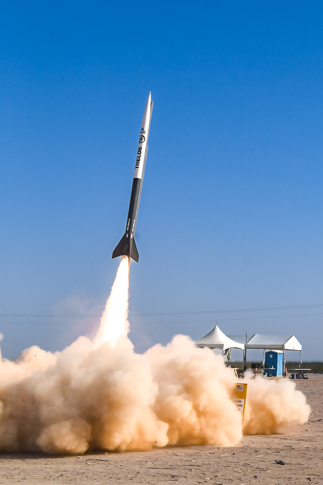

Rockets

Eagle
The goal for IREC 2026 (International Rocket Engineering Competition) is to exceed every expectation for Houston Community College. This year, the Katy Rocket Club (KRC) is aiming for a 30k SRAD (Student Researched and Developed) liquid motor rocket, specifically a Self-pressurized Liquid Bipropellant Rocket Engine (using Nitrous Oxide as the Oxidizer). Basically, it’s a rocket that (as far as we know) has not been made by a community college in years.

Trelós
We applied everything we learned from our previous competition to create Project Trelós. A high-powered experimental rocket built for the IREC 2025 30k COTS category. Trelós is a 5-inch diameter, 11-foot tall rocket made from carbon fiber and fiberglass, powered by an Aerotech O5500X motor. It reached a top speed of Mach 2 and an altitude of 29,064 feet. The rocket used a single-separation, dual-deploy recovery system, featuring a 24-inch Rocketman Mach-2 drogue chute deployed at apogee and an 8-foot main chute at 1,000 feet. For redundancy, we used AltusMetrum TeleMetrum and Featherweight Blue Raven altimeters, each with independent batteries, switches, and ematch channels, to control separation charges and tender-descenders. A Featherweight GPS tracker and a DJI-based video payload gave us live telemetry and real-time video. With Trelós, we made history as the first community college to successfully launch and recover a rocket in the 30k COTS category!

Burger
At Spaceport America Cup 2024, our team took on the ambitious challenge of entering the 10,000 ft COTS solid rocket propulsion category for the first time as one of only three community colleges competing. Our rocket featured a fiberglass airframe with a 6-inch diameter and a total length of 10 feet. The 57-inch booster section was equipped with four G10 fiberglass fins and housed a 98mm Aerotech M6000ST-PS motor. As a small four-person team, we faced tough competition from larger, more established university programs. Thanks to the support and collaboration of other university teams, we performed exceptionally, reaching an apogee of 9,908 feet and exceeding expectations. Motivated by innovation and a pioneering spirit, we aimed to return even stronger the following year — and we did.